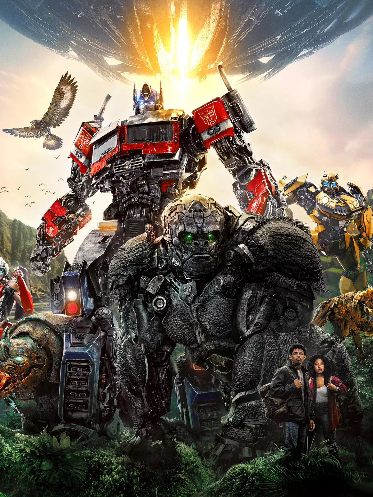
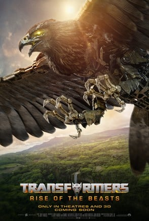
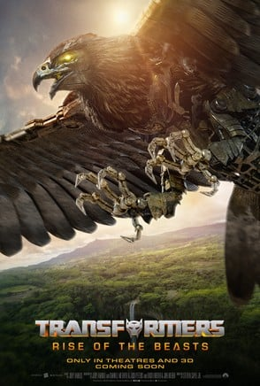

Transformers: O Despertar das Feras
Transformers despertar das feras faz parte de uma franquia de filmes de ação e ficção científica baseada nos brinquedos da Hasbro e da Tomy. Os filmes mostram a guerra entre os Autobots, robôs alienígenas que defendem a Terra, e os Decepticons, seus inimigos que querem dominar o planeta
Sinopse do filme
**Transformers 6**: O filme se passa em 1994, quando os Autobots descobrem uma relíquia de seu planeta natal no Brooklyn e se envolvem em um conflito antigo com os Decepticons e outras duas facções de robôs alienígenas: os Maximals, que se transformam em animais, e os Terrorcons, que são malignos e violentos.

Dois humanos, Noah, um ex-militar especialista em eletrônica, e Elena, uma pesquisadora de artefatos, se juntam aos Autobots para impedir que os Terrorcons usem a relíquia para destruir a Terra. O filme é uma sequência de Bumblebee e uma prequela de Transformers¹².
Produção
Diretor: Steven Caple
Steven Caple Jr. é um cineasta americano que nasceu em Cleveland, Ohio, em 1988. Ele dirigiu Creed II, a sequência do filme de boxe estrelado por Michael B. Jordan e Sylvester Stallone. Em 2020, ele foi contratado para dirigir Transformers: O Despertar das Feras (2023), o sétimo filme da franquia de ação e ficção científica baseada nos brinquedos da Hasbro.
Hasbro Studios
A produtora da franquia Transformers é a **Hasbro Studios**, uma divisão de entretenimento da Hasbro, a empresa de jogos e brinquedos que criou a marca Transformers em 1984. A Hasbro Studios é responsável por produzir filmes, séries de TV e animações baseadas nas propriedades intelectuais da Hasbro, como Transformers, G.I. Joe, My Little Pony, Power Rangers, Monopoly e Magic: The Gathering¹². A Hasbro Studios foi fundada em 2009 e tem sua sede em Burbank, Califórnia. Ela também possui escritórios em Londres, Toronto e Vancouver. Ela trabalha em parceria com outras empresas de produção e distribuição, como a Paramount Pictures, a DreamWorks, a Nickelodeon e a Netflix³. A Hasbro Studios é uma das maiores licenciadoras do mundo, gerando bilhões de dólares em receita com seus produtos e mídias.
Lançamento
Cinema
‘Transformers: O Despertar das Feras‘ (Transformers – Rise of the beasts), novo filme da franquia bilionária, já tem data para chegar nos cinemas nacionais. A Paramount Pictures agendou o filme para o dia 8 de Junho de 2023. O filme teve seu primeiro banner divulgado recentemente no evento Ignite da Hasbro para investidores. A imagem mostra o título do filme em primeiro plano e um antigo símbolo circular ao fundo cercado por vegetação verde, dando à franquia um visual mais primitivo do que antes
Streaming
Ainda não foi confirmado quando será a data de lançamento de Transformers: O Despertar Das Feras no streaming da Paramount+. A Paramount não opera com uma regra rígida para quando moverá seus filmes para o serviço de streaming. Isso permite que cada lançamento seja monitorado individualmente e tome uma decisão que lhe dê a melhor chance de ser um sucesso.
Trailher
A Paramount Pictures divulgou esta semana um novo trailer de “Transformers: O Despertar das Feras", sétimo longa da franquia. Com Anthony Ramos (Nasce Uma Estrela e Hamilton) e Dominique Fishback (Enxame, Judas e o Messias Negro) nos papéis principais, o elenco ainda conta com grandes nomes na dublagem original como Michelle Yeoh, Pete Davidson, Peter Dinklage e Michaela Jae Rodriguez.

 
